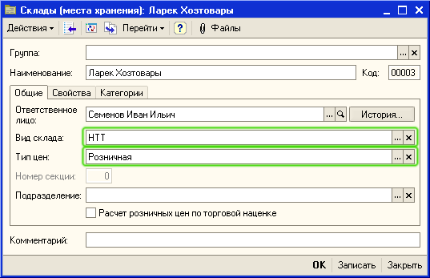
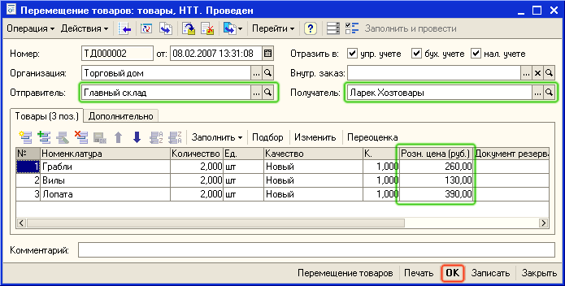
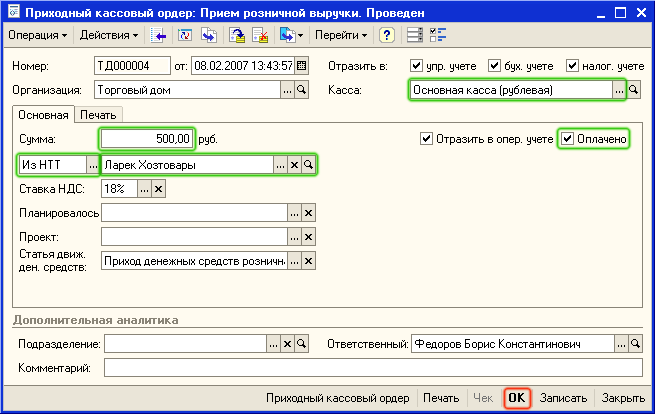
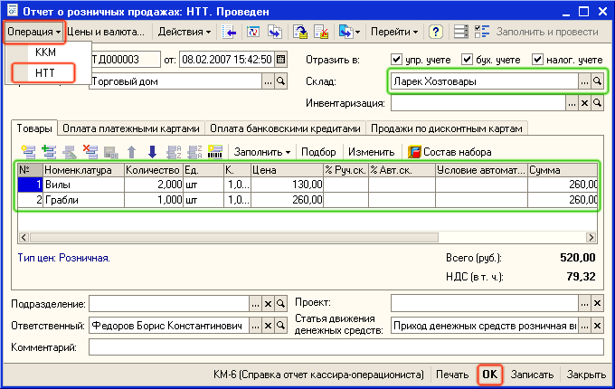

Пример. В состав торгового предприятия входят несколько магазинов (удаленных неавтоматизированных торговых точек). Предприятие перемещает товар в торговые точки, получает от них выручку и отчет о проданных в торговой точке товарах.
1. Введите в справочник Склады информацию о новой неавтоматизированной торговой точке (Ларек Хозтовары). Для этого откройте пункт меню Справочники - Предприятие - Склады (места хранения). В список складов введите информацию о новой НТТ, используя для добавления пиктограмму  . Заполните реквизиты в карточке склада так, как это показано на рисунке.
. Заполните реквизиты в карточке склада так, как это показано на рисунке.

2. В реквизите Тип цен - выберите тот тип цен, по которым будет осуществляться продажа товаров в НТТ. Предварительно информация о значениях цен товаров, которые продаются в НТТ должна быть зафиксирована в документе Установка цен номенклатуры.
Важно. Для каждой НТТ можно назначить свои цены, по которым товар будет продаваться в торговой точке (ларьке, магазине).
3. Оформите перемещение товаров с оптового склада (Главный склад) в НТТ (Ларек Хозтовары). Для этого откройте пункт меню Документы - Запасы (склад) - Перемещение товаров. Введите информацию о новом документе Перемещение товаров, используя для добавления пиктограмму  . Заполните реквизиты документа так, как это показано на рисунке.
. Заполните реквизиты документа так, как это показано на рисунке.

4. При вводе товаров в табличную часть документа будет автоматически установлена та розничная цена, которая указана в карточке склада (НТТ). При необходимости эти цены могут быть изменены в документе Перемещение товаров.
Совет. При подборе товаров в документ используйте вариант подбора По остаткам и качеству номенклатуры , для того чтобы контролировать остатки товаров на складе-отправителе при перемещении товаров в НТТ.
5. Нажмите на кнопку ОК и проведите документ. Товары будут перемещены со склада-отправителя (Главный склад) на склад-получатель (Ларек Хозтовары). При проведении документа будут зафиксированы те розничные цены, по которым товар должен продаваться в НТТ.
6. Оформите прием денежной выручки из НТТ (Ларек Хозтовары). Для этого откройте пункт меню Документы - Денежные средства - Касса- Приходный кассовый ордер. Введите информацию о новом документе Приходный кассовый ордер, используя для добавления пиктограмму  . В документе установите вид операции (Операция) - Прием розничной выручки. Заполните реквизиты документа так, как это показано на рисунке.
. В документе установите вид операции (Операция) - Прием розничной выручки. Заполните реквизиты документа так, как это показано на рисунке.

7. Проведите документ, нажав на кнопку ОК. При проведении документа будет зафиксировано поступление денежных средств в кассу предприятия (Основная касса (рублевая)) от НТТ (Ларек Хозтовары).
8. От НТТ Ларек Хозтовары поступил отчет о проданных товарах. Для фиксации этого факта оформите в программе документ Отчет о розничных продажах. Для этого откройте пункт меню Документы - Розница - Отчеты о розничных продажах. Введите информацию о новом документе Отчет о розничных продажах, используя для добавления пиктограмму  . В документе установите вид операции (Операция) - НТТ. Заполните реквизиты документа так, как это показано на рисунке.
. В документе установите вид операции (Операция) - НТТ. Заполните реквизиты документа так, как это показано на рисунке.

Примечание. Если в отчете о продажах в НТТ зафиксирован факт предоставления скидок (например скидки по дисконтным картам), то в документе Отчет о розничных продажах вручную вводится процент предоставленной скидки (%Авт.ск) и причина по которой была предоставлена скидка (Условие автоматической скидки). В том случае, если оплата товаров в НТТ производилась платежной картой, использовались продажи по дисконтным картам или продажи в кредит, то эта информация вводится на соответствующих закладках.
9. Проведите документ Отчет о розничных продажах, нажав на кнопку ОК.
Важно. Отчет о розничных продажах может быть зафиксирован на основании факта инвентаризации товаров в НТТ. В этом случае сначала оформляется документ Инвентаризация товаров, в котором фиксируется количество товара, переданного в НТТ и остатки товаров в НТТ. На основании этого документа оформляется документ Отчет о розничных продажах, в котором на основании данных инвентаризации рассчитывается количество товаров, проданных НТТ.
Совет. Если НТТ передает выручку одновременно с отчетом о проданных товарах, то можно сначала ввести документ Отчет о розничных продажах, а затем на основании его ввести документ Приходный кассовый ордер.
Теперь Вы научились работать с неавтоматизированными точками. Из следующего раздела Вы узнаете как произвести настройку отчетов и с помощью них провести анализ деятельности торгового предприятия.
Следующий раздел: «Анализ показателей деятельности предприятия»